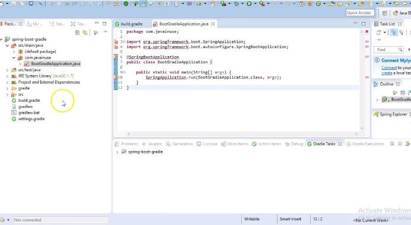
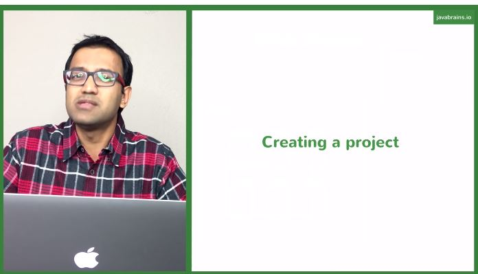
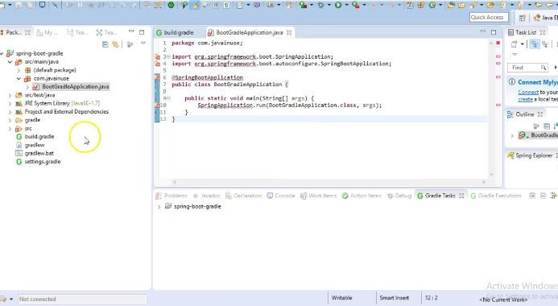
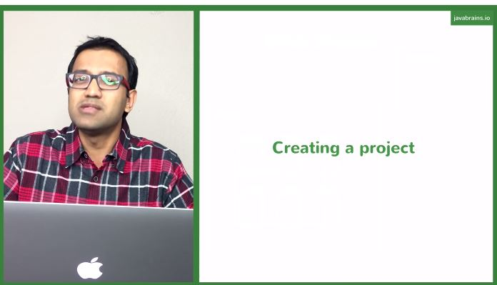

Spring boot
Spring tool suite
Info ! Untuk dapat membuat konten maupun pertanyaan pada forum anda dapat mengklik tombol 'Ciptakan Thread' dibawah.
Judul Thread
Statistik
Balasan Terakhir
Jadikan Hot thread

Spring Boot + Gradle Hello World Example
Oleh : arieft23
#springBoot#video#tutorial
Dibalas : 19
Dilihat : 201
Komentar terakhir 26-04-2018
oleh: username00

Spring Boot Quick Start 8 - Creating a Spring Boot project
Oleh : ramsya
#video#tutorialDibalas : 92
Dilihat : 500
Komentar terakhir 24-04-2018
oleh: alhamfr

Spring Tool Suite (STS) installation in Eclipse IDE
Oleh : dregema
#video#tutorialDibalas : 2
Dilihat : 35
Komentar terakhir 27-04-2018
oleh: username00

Configuring Spring Boot For MySQL
Oleh : ybisma
#kalkulus#video#tutorialDibalas : 12
Dilihat : 113
Komentar terakhir 26-04-2018
oleh: ipagastya

Learn debugging in java using STS
Oleh : mfauzanf
#video#debugging#tutorialDibalas : 35
Dilihat : 393
Komentar terakhir 26-04-2018
irfinhandi
Info ! Untuk dapat membuat konten maupun pertanyaan pada forum anda dapat mengklik tombol 'Ciptakan Thread' dibawah.
| Judul Thread | Statistik | Balasan Terakhir | Jadikan Hot thread | |
|  | Spring Boot + Gradle Hello World ExampleOleh : arieft23#springBoot#video#tutorial | Dibalas : 19Dilihat : 201 |
Komentar terakhir 26-04-2018oleh: username00 |
|
|  | Spring Boot Quick Start 8 - Creating a Spring Boot projectOleh : ramsya#video#tutorial |
Dibalas : 92Dilihat : 500 |
Komentar terakhir 24-04-2018oleh: alhamfr |
|
|
Spring Tool Suite (STS) installation in Eclipse IDEOleh : dregema#video#tutorial |
Dibalas : 2Dilihat : 35 |
Komentar terakhir 27-04-2018oleh: username00 |
|
|
Configuring Spring Boot For MySQLOleh : ybisma#kalkulus#video#tutorial |
Dibalas : 12Dilihat : 113 |
Komentar terakhir 26-04-2018oleh: ipagastya |
|
|
Learn debugging in java using STSOleh : mfauzanf#video#debugging#tutorial |
Dibalas : 35Dilihat : 393 |
Komentar terakhir 26-04-2018irfinhandi |